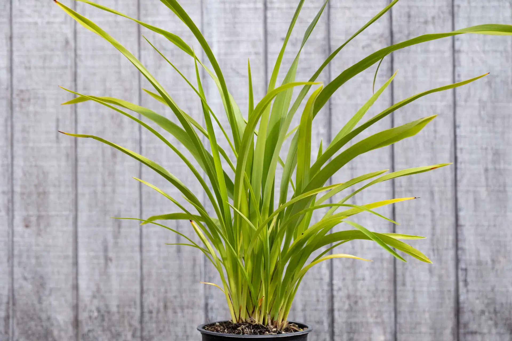
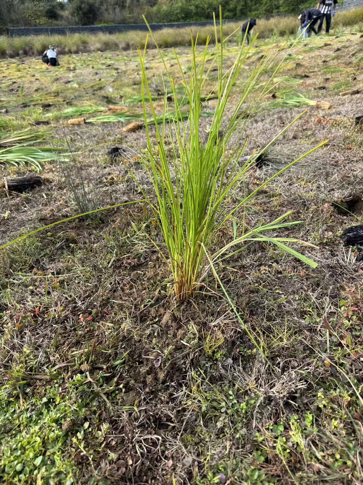

Location
2 Charles Henry Road, PapakuraCommunity restoration
2 Charles Henry Way restoration
A community planting day with Sustainable Papakura focused on native plant restoration and strengthening local vegetation in Papakura.
Organisation
Sustainable PapakuraActivity
Native plant restorationPlants established
~2,000 native plantsSpecies Planted

Mountain Flax
Phormium cookianum Slope stabilisation & bird habitatA robust flax species well suited to South Auckland's conditions. Forms large clumps that provide shelter for small birds and help stabilise soil on slopes.

Carex secta
Pūrei Riparian restoration & water filteringA native sedge that thrives in wet conditions near waterways. It supports riparian restoration by filtering sediment from runoff before it enters streams.

Carex virgata
Pūrei Wetland margin & invertebrate supportAnother native sedge species ideal for stream and wetland margins. Together with Carex secta, it creates a diverse ground layer that supports invertebrate communities.
Photos from the Planting Day

Finished planting

Closeup of finished planting

Group working together to plant

Scruffy dome for stormwater runoff

Talking with community ranger Shane McNeil

Group working together to dig holes
Before and After


Before
After
Interview with Shane McNeil
Community Ranger, South Auckland, Sustainable Papakura
Q: Can you tell us about why this site was chosen for restoration?
Shane McNeil — Community Ranger This site at 2 Charles Henry Way was chosen because it is an important stormwater runoff area in Papakura. Water from nearby roads flows into this reserve before reaching a nearby stream. Planting vegetation here helps filter pollutants from the water before they enter local waterways and improves the health of the surrounding environment.
Q: What was this area like before restoration?
Shane McNeil — Community Ranger Before restoration, the site consisted mainly of mown grass with very little vegetation. It provided limited habitat for wildlife and had little ability to filter stormwater runoff.
Q: What are the biggest challenges for vegetation restoration in this area?
Shane McNeil — Community Ranger The site is affected by stormwater pollution, including contaminants such as heavy metals and other pollutants carried from roads. Heavy rainfall can also increase flooding and erosion.
Q: How does urban development nearby affect your restoration work?
Shane McNeil — Community Ranger Urban development has reduced and fragmented natural habitats into smaller patches. This limits available space for native species and increases the amount of polluted runoff entering the area.
Q: Can you walk us through the restoration process?
Shane McNeil — Community Ranger We start with a site assessment — understanding the hydrology, soil type, existing vegetation, and what native communities would naturally occur there. Then we do weed control — usually several rounds before planting. We select species appropriate to the site conditions and plant at densities that will form a closed canopy. After planting, we do ongoing maintenance for at least two years: releasing plants from weed competition, replacing failures, and monitoring.
Q: How do you decide where to prioritise restoration?
Shane McNeil — Community Ranger We prioritise riparian areas — stream margins and wetland edges — because they give the most environmental benefit for restoration effort. They filter water, provide wildlife corridors, and stabilise banks. We also look for connectivity — linking remnant patches together is more valuable than isolated plantings, because it allows wildlife to move through the landscape.
Q: What plant species are we planting now?
Shane McNeil — Community Ranger So, currently, we are planting mountain flac which is Phormium cookianum, Carex secta, and Carex virgata. There are a few other species too.
Q: How do you decide what to plant?
Shane McNeil — Community Ranger Plants are selected based on the site's wet conditions and role in managing stormwater. Water-tolerant native species such as flax (Phormium cookianum), Carex secta, and Carex virgata are used because they can survive in these conditions while improving water quality.
Q: What are your goals for this restoration site over the next five years?
Shane McNeil — Community Ranger We want to see a closed canopy of native vegetation along the full length of the stream corridor. That means continued planting and weed control, and hopefully recruiting more volunteers and community support. We also want to start monitoring — setting up transects to track native plant establishment and invertebrate recovery. And we'd love to see native fish returning to the stream once water quality improves.
Q: What are the long-term goals for this restoration project?
Shane McNeil — Community Ranger The long-term goals are to improve water quality, reduce stormwater pollution, increase biodiversity, and create a resilient native ecosystem. Success would be measured by healthier waterways, greater numbers of native species, and a thriving natural habitat. We could probably test the water quality around here later on.